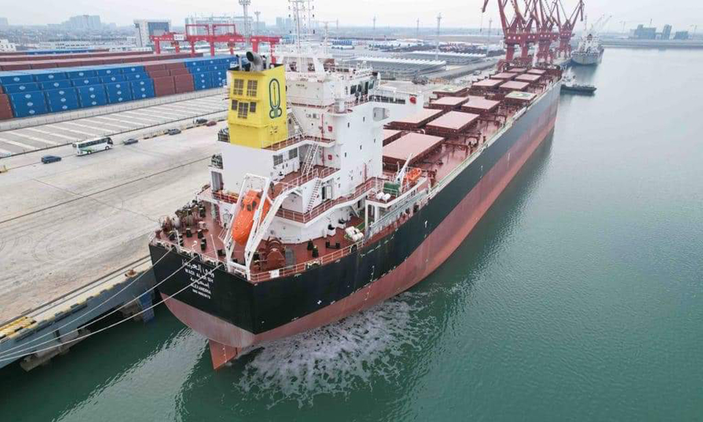
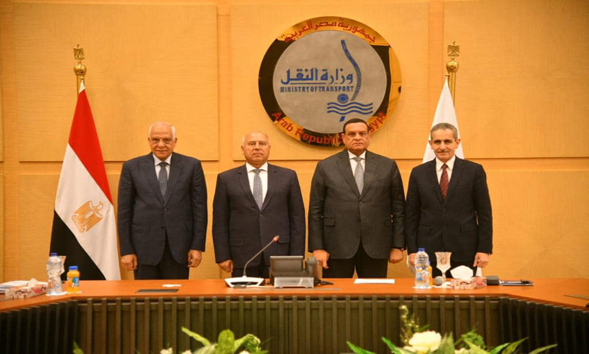

-
 The Prime Minister begins an expanded inspection tour of a number of projects in the Suez Canal Economic Zone
The Prime Minister begins an extensive inspection tour of a number of projects in the Suez Canal Economic Zone, accompanied by Lieutenant General Engineer Kamel Al-Wazir, Minister of Transport, Mr. Walid Gamal El-Din, Chairman of the General Authority of the Suez Canal Economic Zone, and Dr. Abdullah Ramadan, Deputy Governor of Suez. …
-
 The Minister of Transport signs with the governors of Gharbia and Giza two cooperation protocols in the presence of the Minister of Local Development
The Minister of Transport signs with the governors of Gharbia and Giza two cooperation protocols in the presence of the Minister of Local Development regarding the governorate launching a public bid to manage the governorate’s needs for safe, economical and comfortable mass transportation suitable for citizens in all city areas.